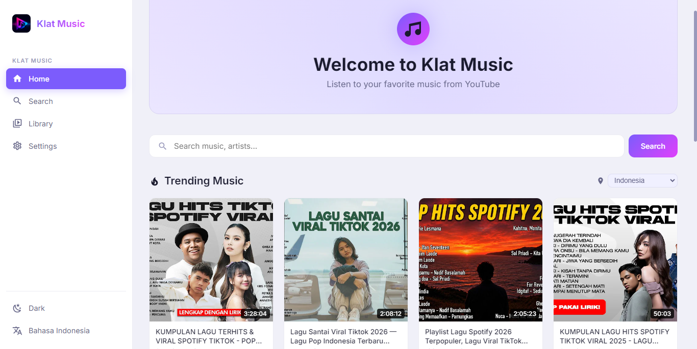

Online Streaming
Stream music from multiple online sources. Search millions of songs, listen instantly, no account required.
Music player and downloader for Windows & Linux. Stream, download, and manage your music library with a modern interface. Supports online sources, local files, playlists, synced lyrics, audio visualizer, equalizer, and internet radio. No ads, no tracking, completely free.

Stream music from multiple online sources. Search millions of songs, listen instantly, no account required.
Download songs for offline listening. Choose quality from 128kbps to 320kbps. Supports FLAC lossless format.
Create and manage playlists with drag & drop. Auto-playlist based on genre, mood, or recently played. Import/export M3U.
Search by title, artist, album, or lyrics. Instant results with album art previews. Sort by popularity, date, or duration.
Real-time synced lyrics display. Karaoke-style highlighting as the song plays. Search and display lyrics for any track.
Beautiful audio visualizations with multiple spectrum modes. Customize colors and effects. GPU-accelerated rendering.
10-band graphic equalizer with presets. Bass boost, reverb, crossfade, gapless playback. Customize your sound.
Edit ID3 tags, album art, and metadata. Batch edit multiple files. Auto-fetch album art and tag info from online databases.
Thousands of internet radio stations worldwide. Browse by genre, country, or language. Add custom radio streams.
Build and organize your music library. Discover new songs, create mood playlists, and enjoy hi-fi audio quality.
Focus music and background soundscapes. Download playlists for study sessions. No ads, no distractions.
Listen to thousands of internet radio stations. Discover music from around the world. Record radio streams.
Find royalty-free music for your videos and podcasts. Edit tags and organize your audio assets efficiently.
v1.0.0
v1.0.0
Yes! Klat Music is 100% free and open source (GPL-3.0). No subscriptions, no ads, no in-app purchases. All features are included.
Yes! Download songs for offline listening. Your downloaded music is stored locally and accessible without internet.
Klat Music supports MP3, FLAC, OGG Vorbis, Opus, AAC, M4A, WAV, AIFF, and WMA. Both lossy and lossless formats are supported.
Yes! Klat Music fetches and displays synced lyrics in real-time with karaoke-style highlighting. You can also add custom LRC files.
Yes! Klat Music scans your existing music directories and imports all supported formats. It reads ID3 tags and organizes your library automatically.
Klat Music is available on Windows and Linux. macOS support is planned for a future release.